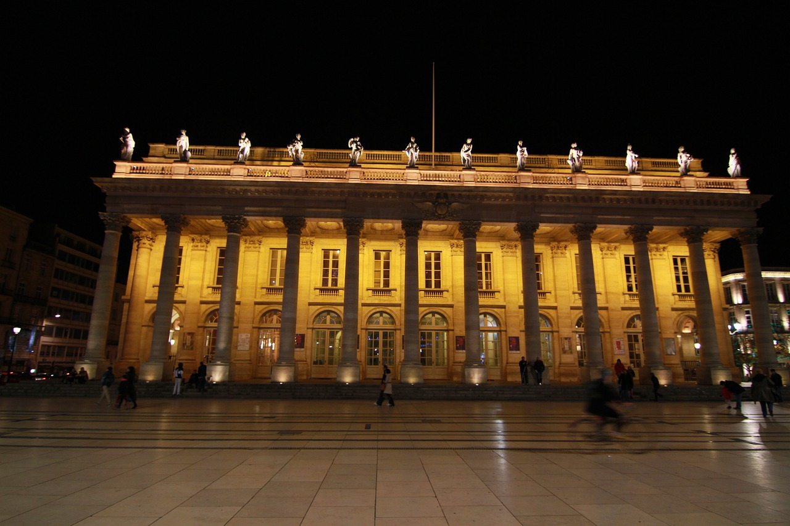
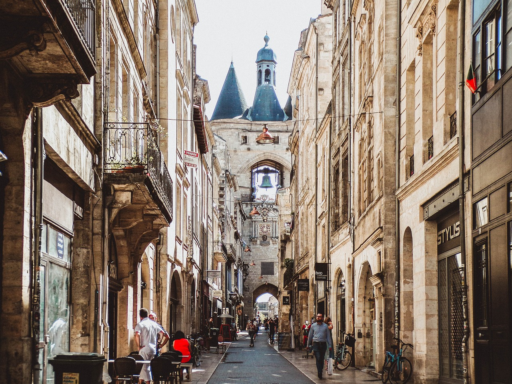
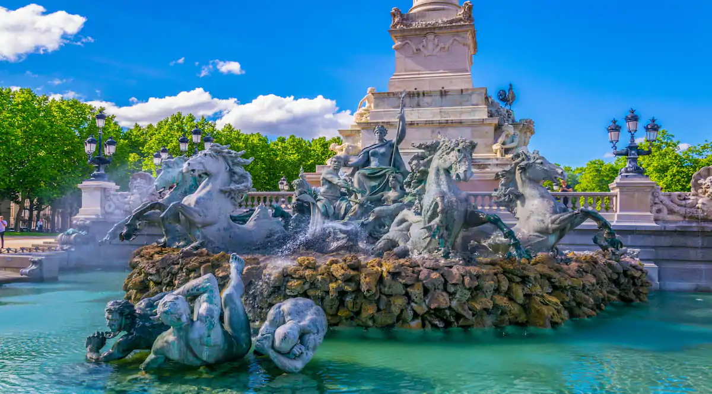

Que visiter à Bordeaux ?
Flânez dans les rues de Bordeaux, classée au patrimoine mondial de l'UNESCO, et imprégnez-vous de son atmosphère unique.
De la place de la Bourse et son miroir d'eau à la majestueuse cathédrale Saint-André, en passant par le Grand Théâtre et les quais animés, la ville offre un panel de découvertes pour tous les goûts.
Amateurs d'art, de vin ou simplement de belles promenades, Bordeaux saura vous combler.
La place de la Bourse et son miroir d'eau : un mariage réussi entre histoire et modernité

La place de la Bourse, joyau architectural du XVIIIème siècle, est un incontournable de Bordeaux.
Ce vaste espace, bordé de bâtiments élégants, est un véritable témoignage de la grandeur passée de la ville.
Au cœur de cette place, le miroir d'eau, une création contemporaine, offre un contraste saisissant avec l'architecture classique environnante.
Ce bassin réfléchissant géant, l'un des plus grands au monde, se transforme en miroir géant lorsque l'eau recouvre sa surface. Les façades des bâtiments environnants, dont la superbe Bourse, se reflètent alors dans l'eau, créant un effet miroir hypnotisant.
Mais le spectacle ne s'arrête pas là ! À intervalles réguliers, des jets d'eau jaillissent du sol, transformant le miroir en un brouillard léger et féérique.
Ce mariage réussi entre histoire et modernité fait de la place de la Bourse et de son miroir d'eau un lieu unique en son genre. Les visiteurs peuvent se promener sur les quais, admirer les reflets changeants, et profiter de l'ambiance animée qui règne sur les lieux.
C'est un endroit idéal pour se détendre, prendre des photos, ou simplement observer les passants.
La Cité du Vin : un voyage sensoriel au cœur du monde viticole

La Cité du Vin, véritable écrin dédié à la culture du vin, est une expérience à vivre à Bordeaux. Ce musée contemporain, inauguré en 2016, invite les visiteurs à un voyage immersif à travers les siècles et les continents, à la découverte des secrets de la vigne et du vin.
Le bâtiment lui-même est une œuvre d'art. Sa forme, évoquant une flûte de champagne, se distingue par ses courbes élégantes et ses reflets changeants.
L'intérieur, tout aussi remarquable, offre un parcours ludique et pédagogique à travers les différents espaces.
L'exposition permanente propose un voyage sensoriel unique. Grâce à des technologies innovantes, vous pourrez découvrir :
- Les origines du vin : Des premières vignes domestiquées aux cépages d'aujourd'hui, l'histoire du vin est retracée de manière passionnante.
- Les terroirs du monde : Partez à la rencontre des vignoblons les plus célèbres et découvrez les spécificités de chaque région viticole.
- Les hommes et les femmes du vin : Des vignerons aux sommeliers, en passant par les artistes et les écrivains, découvrez les personnalités qui ont marqué l'histoire du vin.
- Les rites et les traditions : Plongez au cœur des différentes cultures viticoles et découvrez les cérémonies liées au vin.
Le point d'orgue de la visite est sans doute le belvédère. Situé au sommet du bâtiment, il offre une vue panoramique à 360° sur la ville de Bordeaux et ses vignobles. C'est l'endroit idéal pour déguster un verre de vin tout en admirant le paysage.
La Cité du Vin propose également une programmation culturelle riche et variée : expositions temporaires, dégustations, ateliers, conférences... Il y en a pour tous les goûts et tous les âges.
Que vous soyez un passionné de vin ou simplement curieux, la Cité du Vin vous promet une expérience unique et enrichissante. C'est une invitation à découvrir le monde du vin sous toutes ses facettes.
Le Grand Théâtre de Bordeaux : un joyau du néo-classicisme

Le Grand Théâtre de Bordeaux est bien plus qu'une simple salle de spectacle. C'est un véritable chef-d'œuvre architectural, emblématique du patrimoine bordelais et classé monument historique.
Érigé au XVIIIe siècle, il est l'un des plus anciens théâtres d'Europe encore en activité.
L'édifice, conçu par l'architecte Victor Louis, est un parfait exemple du style néo-classique. Sa façade imposante, ornée de colonnes et de sculptures, rappelle les grands théâtres antiques.
À l'intérieur, la salle de spectacle est tout aussi impressionnante.
Sa décoration riche et raffinée, ainsi que son acoustique exceptionnelle, en font un lieu de représentation privilégié.
Visiter le Grand Théâtre, c'est remonter le temps et s'immerger dans l'atmosphère du XVIIIe siècle. Les représentations qui s'y déroulent, qu'il s'agisse d'opéras, de ballets ou de concerts, sont autant d'occasions de découvrir le répertoire classique et de vivre une expérience artistique inoubliable.
Au-delà de sa fonction de salle de spectacle, le Grand Théâtre est un lieu de vie. Il accueille régulièrement des expositions, des conférences et des événements culturels.
C'est également un lieu de rencontre et d'échange pour les amateurs de musique et de théâtre.
La cathédrale Saint-André et la tour Pey-Berland : témoins de l'histoire bordelaise

Au cœur de Bordeaux, la cathédrale Saint-André et la tour Pey-Berland forment un duo emblématique qui témoigne de l'histoire riche et complexe de la ville.
Ces deux monuments, chacun à sa manière, ont marqué les esprits et façonné le paysage urbain.
La cathédrale Saint-André, dédiée à l'apôtre André, est le plus imposant édifice religieux de Bordeaux. Sa construction s'est étalée sur plusieurs siècles, du XIIe au XVIe siècle, ce qui explique la diversité des styles architecturaux qui la composent.
Le gothique angevin prédomine, mais on y trouve également des éléments romans.
L'intérieur de la cathédrale est tout aussi impressionnant que l'extérieur. Ses voûtes hautes, ses vitraux colorés et ses nombreuses chapelles créent une atmosphère solennelle et propice à la méditation.
On y admire également de nombreuses œuvres d'art, telles que des sculptures, des peintures et des objets liturgiques.
La tour Pey-Berland, adjacente à la cathédrale, est un élément architectural singulier.
Construite au XIVe siècle, elle servait à l'origine de tour de défense. Transformée en clocher au XIXe siècle, elle offre aujourd'hui une vue panoramique sur la ville.
Son style architectural, mêlant gothique et Renaissance, est unique en son genre. La tour Pey-Berland est reconnaissable entre mille grâce à sa flèche octogonale surmontée d'une girouette en forme de lune.
La cathédrale Saint-André et la tour Pey-Berland forment un ensemble architectural et historique remarquable. Elles témoignent de l'importance religieuse et politique de Bordeaux au Moyen Âge.
Ces deux monuments sont inscrits au patrimoine mondial de l'UNESCO depuis 1998 au titre des chemins de Saint-Jacques-de-Compostelle en France.
Bordeaux : une escapade au cœur des grands crus

Bordeaux, capitale mondiale du vin, est une destination de choix pour les amateurs de cépages et de terroirs. La région, riche d'une histoire viticole millénaire, offre une diversité de paysages et de vins qui en font un terrain de jeu infini pour les œnologues en herbe.
Les incontournables du Bordelais
Si vous souhaitez découvrir les trésors viticoles de Bordeaux, voici quelques domaines qui méritent une visite :
- Saint-Émilion: Ce charmant village médiéval, classé au patrimoine mondial de l'UNESCO, est entouré de vignobles produisant des vins rouges puissants et complexes. Le Château Cheval Blanc et le Château Ausone sont deux références incontournables.
- Pessac-Léognan: Située au sud de Bordeaux, cette appellation produit des vins rouges et blancs d'une grande finesse. Le Château Haut-Brion et le Château Pape Clément sont des adresses prestigieuses.
- Médoc: Cette région, située sur la rive gauche de la Garonne, est réputée pour ses vins rouges puissants et structurés. Le Château Margaux, le Château Lafite Rothschild et le Château Latour sont parmi les plus célèbres.
- Graves: Cette appellation, située au sud-ouest de Bordeaux, produit des vins rouges et blancs d'une grande élégance. Le Château Haut-Bailly et le Château Smith Haut Lafitte sont des domaines incontournables.
Les expériences à vivre
Au-delà de la dégustation, les domaines viticoles proposent de nombreuses expériences pour découvrir les secrets de l'élaboration du vin :
- Visites guidées: Parcourez les vignes, les chais et les cuviers pour comprendre les différentes étapes de la vinification.
- Dégustations: Assistez à des ateliers de dégustation pour apprendre à apprécier les nuances aromatiques des vins.
- Accords mets et vins: Découvrez les associations parfaites entre les vins de Bordeaux et les produits du terroir.
- Séjours viticoles: Offrez-vous une escapade dans un château viticole pour vivre une expérience immersive au cœur du vignoble.
Une croisière gourmande au cœur de Bordeaux


Les Bateaux Bordelais vous invitent à une expérience unique alliant découverte et gourmandise. En partenariat avec la célèbre maison Baillardran, ils proposent des croisières sur la Garonne durant lesquelles vous pourrez admirer les plus beaux monuments de Bordeaux tout en dégustant les délicieux canelés bordelais.
Une croisière inoubliable
Embarquez à bord d'un bateau confortable et laissez-vous guider le long des quais. Vous découvrirez les façades classées au patrimoine mondial de l'UNESCO, le Pont de Pierre, la Cité du Vin et bien d'autres sites emblématiques. Un guide passionné vous partagera des anecdotes et des histoires sur la ville et son histoire viticole.
Les canelés Baillardran : un incontournable
Pour accompagner cette promenade fluviale, quoi de mieux qu'un délicieux canelé ? Créés à Bordeaux au XVIIIe siècle, ces petits gâteaux à la pâte moelleuse et au cœur liquide sont devenus une véritable institution. Baillardran, célèbre pour ses canelés, a sélectionné spécialement pour vous une recette authentique qui ravira vos papilles.
Les 8 ponts de Bordeaux : Une traversée de l'histoire

Bordeaux, ville dynamique et riche en histoire, est également réputée pour ses nombreux ponts qui enjambent la Garonne.
Chacun de ces ouvrages d'art raconte une page de l'histoire de la ville et offre une perspective unique sur son architecture.
De l'ancien au contemporain, les ponts de Bordeaux présentent une grande variété de styles architecturaux.
Du majestueux Pont de Pierre, témoin du XIXème siècle, au moderne Pont Jacques Chaban-Delmas, chaque pont possède sa propre identité et son charme particulier.
Les ponts de Bordeaux ne sont pas seulement des infrastructures, ce sont aussi des éléments clés du patrimoine de la ville. Ils témoignent de son évolution urbaine et de son développement économique.
De plus, ils offrent aux habitants et aux visiteurs de nombreux points de vue sur la ville et la Garonne.
Que vous soyez passionné d'histoire, d'architecture ou simplement à la recherche d'une promenade agréable, les ponts de Bordeaux vous réservent de belles surprises.
Une balade à pied ou à vélo le long des quais vous permettra d'admirer ces ouvrages d'art et de découvrir les différents quartiers de la ville.
La Grosse Cloche de Bordeaux : un vestige médiéval au cœur de la ville

La Grosse Cloche de Bordeaux est bien plus qu'une simple cloche. C'est un véritable monument historique qui témoigne du riche passé médiéval de la ville.
Située au cœur du centre historique, elle servait autrefois de porte d'entrée à la ville fortifiée et de beffroi de l'hôtel de ville.
Édifiée au XVème siècle, cette tour imposante a traversé les siècles et est aujourd'hui l'un des symboles les plus emblématiques de Bordeaux.
Visiter la Grosse Cloche, c'est remonter le temps. Les visiteurs peuvent découvrir les anciennes cellules de prison, les mécanismes de la cloche et admirer la vue panoramique sur la ville depuis le sommet de la tour.
La cloche elle-même, baptisée "Armande-Louise", pèse près de 8 tonnes et sonne six fois par an pour célébrer les grandes fêtes nationales.
La Grosse Cloche de Bordeaux est un incontournable pour tous ceux qui souhaitent découvrir l'histoire et le patrimoine de la ville.
Que vous soyez passionné d'histoire ou simplement curieux, vous serez séduit par le charme de ce monument emblématique.
La rue Saint-Rémi : un écrin gourmand au cœur de Bordeaux

La rue Saint-Rémi, située dans le quartier historique de Bordeaux, est bien plus qu'une simple artère urbaine. C'est un véritable passage obligé pour les gourmands en quête de saveurs authentiques.
Cette petite rue animée concentre une pléiade de restaurants, offrant un voyage culinaire à travers les spécialités du Sud-Ouest.
Réputée pour sa diversité gastronomique. On y trouve des établissements pour tous les goûts et tous les budgets.
Les amateurs de cuisine traditionnelle française pourront se régaler de plats typiques comme le foie gras, l'entrecôte à la bordelaise ou encore la lamproie à la bordelaise.
Les curieux pourront découvrir des saveurs plus exotiques grâce aux restaurants proposant une cuisine asiatique, indienne, espagnole ou africaine.
Parmi les nombreuses adresses de la rue Saint-Rémi, certaines se distinguent par leur authenticité et leur qualité.
La Brasserie Bordelaise est un incontournable pour déguster les classiques de la cuisine du Sud-Ouest dans une ambiance conviviale.
La Raclette propose, comme son nom l'indique, une spécialité savoyarde revisitée avec des produits locaux.
Pour les amateurs de crêpes, la Crêperie Reno est une valeur sûre.
La rue Saint-Rémi est particulièrement animée le soir. Les terrasses des restaurants se remplissent et l'ambiance est festive. C'est l'endroit idéal pour passer un agréable moment entre amis ou en famille.
Elle est située à proximité de nombreux sites touristiques comme la place du Parlement, le cours du Chapeau Rouge et la place de la Bourse, et fait partie d'un quartier en pleine effervescence, où se mêlent boutiques de créateurs, bars à vins et galeries d'art.
La rue Sainte-Catherine : l'artère commerçante de Bordeaux

La rue Sainte-Catherine est bien plus qu'une simple rue, c'est un véritable emblème de Bordeaux. En tant que plus longue rue commerçante piétonne d'Europe, elle constitue le cœur battant de la ville et attire chaque année des millions de visiteurs.
Anciennement un cardo maximus, un des principaux axes de la ville romaine de Burdigala, la rue Sainte-Catherine a toujours été un lieu de passage et d'échanges.
Au fil des siècles, elle s'est transformée pour devenir la rue commerçante que nous connaissons aujourd'hui.
Depuis 1984, elle est entièrement piétonne, offrant ainsi un espace de flânerie agréable et convivial.
La rue Sainte-Catherine est un véritable paradis pour les amateurs de shopping. On y trouve toutes les grandes marques de prêt-à-porter, des magasins de chaussures, des accessoires de mode, des parfumeries, des librairies et bien d'autres encore.
Les gourmands ne seront pas en reste avec de nombreuses boulangeries, pâtisseries et chocolateries.
Au-delà de l'aspect commercial, la rue Sainte-Catherine est un lieu de vie où se mêlent Bordelais et touristes. On y organise régulièrement des événements, des animations et des marchés.
Les terrasses des cafés et des restaurants sont très appréciées pour se détendre et observer le monde passer.
La rue Sainte-Catherine se distingue par son architecture éclectique. On y trouve des façades Haussmanniennes, des immeubles Art Déco et des bâtiments plus contemporains. Cette diversité architecturale contribue au charme et à l'authenticité de la rue.
La rue Sainte-Catherine est un incontournable pour tous ceux qui visitent Bordeaux. Que vous soyez à la recherche d'une bonne affaire, d'un moment de détente ou simplement d'une balade agréable, vous trouverez forcément votre bonheur dans cette rue animée et pleine de vie.
Les quais de Bordeaux : une invitation à la flânerie et au sport

Les quais de Bordeaux offrent un cadre exceptionnel pour se promener, faire du sport ou tout simplement se détendre au bord de la Garonne. Ces espaces aménagés, s'étendant sur plusieurs kilomètres, sont devenus un incontournable de la ville.
Que vous soyez amateur de longues balades ou de courtes promenades, les quais de Bordeaux sauront vous satisfaire. Le parcours est jalonné de différents espaces :
- La promenade Corajoud : Ce vaste espace vert offre une vue imprenable sur la Garonne et la ville. C'est l'endroit idéal pour une promenade en famille ou entre amis.
- Le quai des Marques : Pour les amateurs de shopping, le quai des Marques est un véritable paradis. On y trouve de nombreuses boutiques de grandes marques à prix réduits.
- La Cité des Sciences : Ce centre de culture scientifique propose de nombreuses expositions interactives pour petits et grands.
- Les installations sportives : Les quais de Bordeaux sont également équipés d'installations sportives pour tous les niveaux : pistes cyclables, skatepark, terrains de sport...
En vous promenant sur les quais, vous pourrez admirer de nombreux bâtiments historiques tels que le Pont de Pierre, le Pont Jacques Chaban-Delmas et la Cité du Vin. Ces édifices témoignent du riche patrimoine architectural de Bordeaux.
Les quais de Bordeaux sont un lieu de vie qui se transforme au fil des saisons. En été, les terrasses des cafés sont prises d'assaut et les habitants profitent des plages aménagées. En hiver, l'ambiance est plus calme et invite à la contemplation.
Les quais de Bordeaux sont aussi un lieu de rencontre et d'échange. De nombreux événements y sont organisés tout au long de l'année : concerts, festivals, marchés...
La place des Quinconces : un écrin vert au cœur de Bordeaux

La place des Quinconces est bien plus qu'une simple place, c'est un véritable poumon vert au cœur de Bordeaux.
Avec ses 12 hectares, elle est l'une des plus grandes places d'Europe et offre un espace de détente et de loisirs unique.
Aménagée au XIXe siècle sur l'emplacement de l'ancien château Trompette, la place des Quinconces doit son nom à la disposition en quinconce des arbres qui la bordent.
Elle a rapidement gagné en importance et est devenue le lieu de rassemblement privilégié des Bordelais.
Au centre de la place se dresse le Monument aux Girondins, un ensemble monumental dédié aux députés girondins guillotinés pendant la Révolution française.
Cette œuvre impressionnante est un symbole fort de la ville et attire de nombreux visiteurs.
La place des Quinconces est un lieu de vie où se mêlent les Bordelais et les touristes.
Elle accueille tout au long de l'année de nombreux événements : fêtes foraines, manifestations sportives, concerts et spectacles...